C++
Intermediate
Hello, I'm
Get To Know More
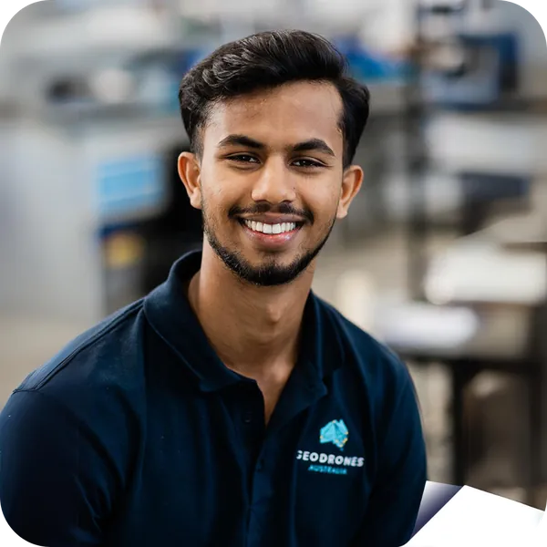
Fascinated by robotics systems—specifically how automated systems can be leveraged to create a more sustainable and fair future for all. Fueled by natural curiosity, long-term collaborations and a love for learning.
Dedicated to creating impactful robotic solutions to improve lives and tackle challenges aligned with the UN Sustainable Development Goals. My ultimate dream is assisting my home country, Sri Lanka, through humanitarian engineering efforts.
Hugely passionate about football (Visca el Barça!) and sports more generally, alongside music and travel. Curiosity drives my life as my greatest joy is exploring new ideas to broaden my perspective.
Browse My Recent
Multi-purpose AI agent-enabled system, capable of question answering, analytics, figure generation, report generation
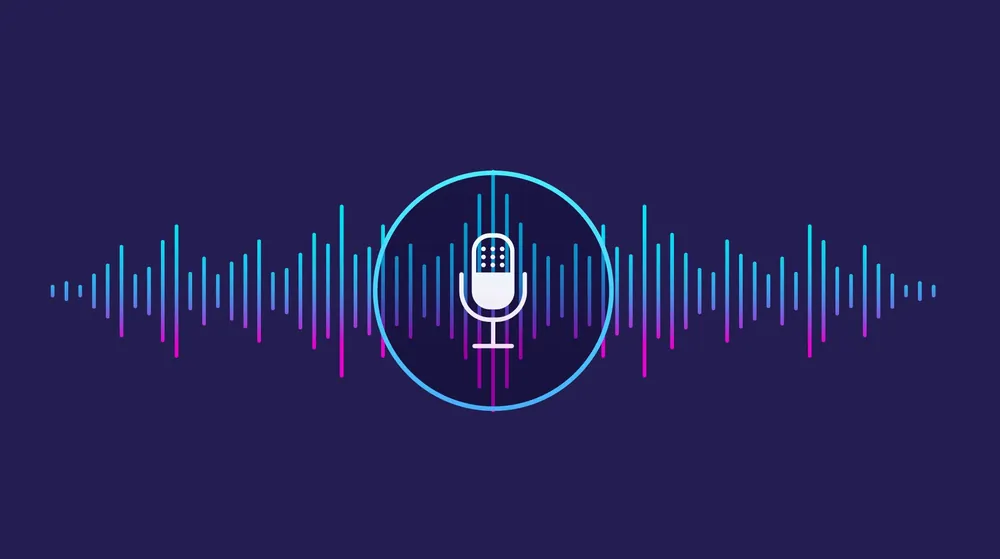
Lightweight edge-optimised AI voice assistant for a textile marketplace app in India to help users better manage their digital literacy limitations and improve autonomy
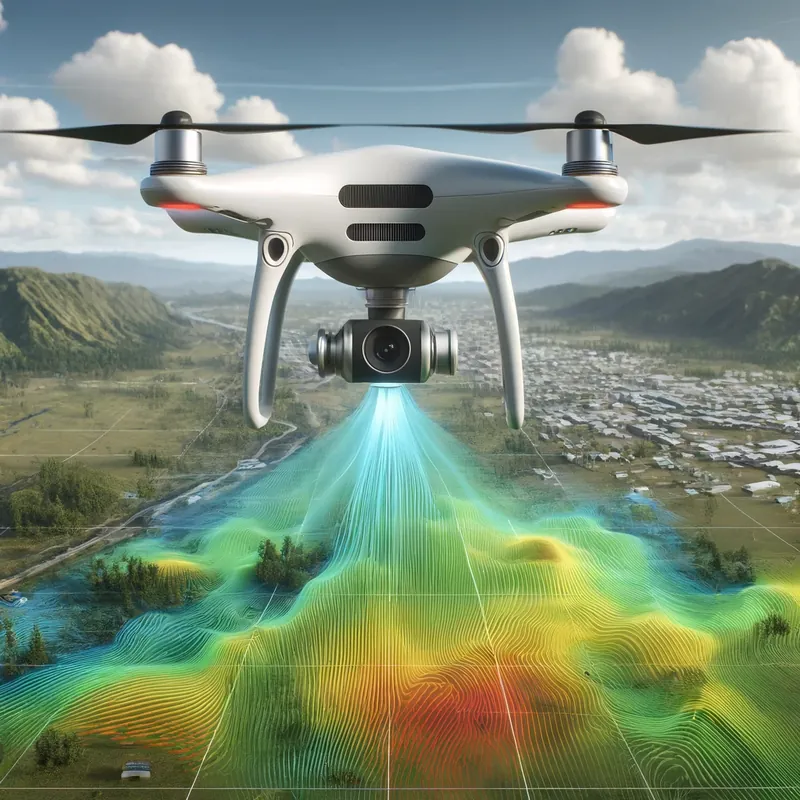
Near real-time AI change detection on the edge using both camera and LiDAR fused measurements.
Intelligent charging/discharging of batteries through precise monitoring and regulation to ensure safe and efficient operation.
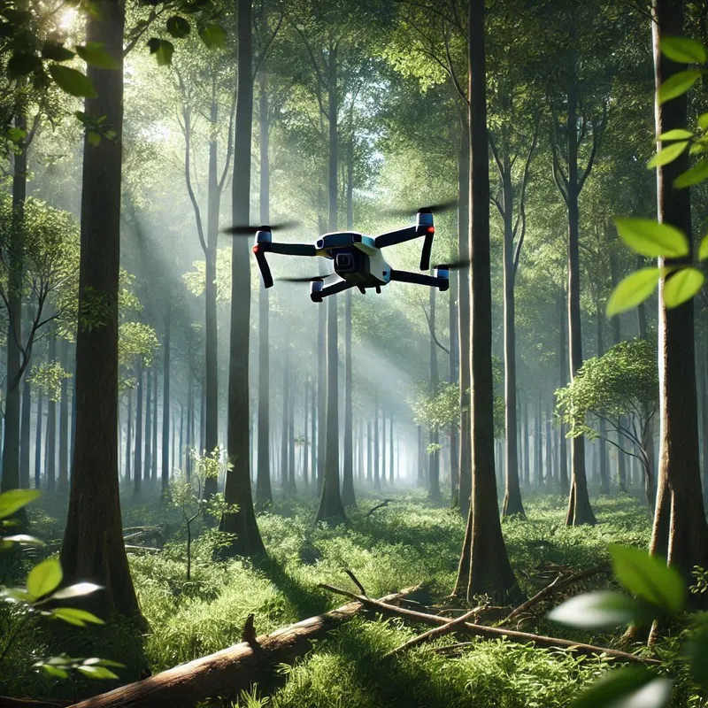
Successfully tuned and integrated an open-source state estimator into AirSim simulator for accurate navigation without GPS signals.
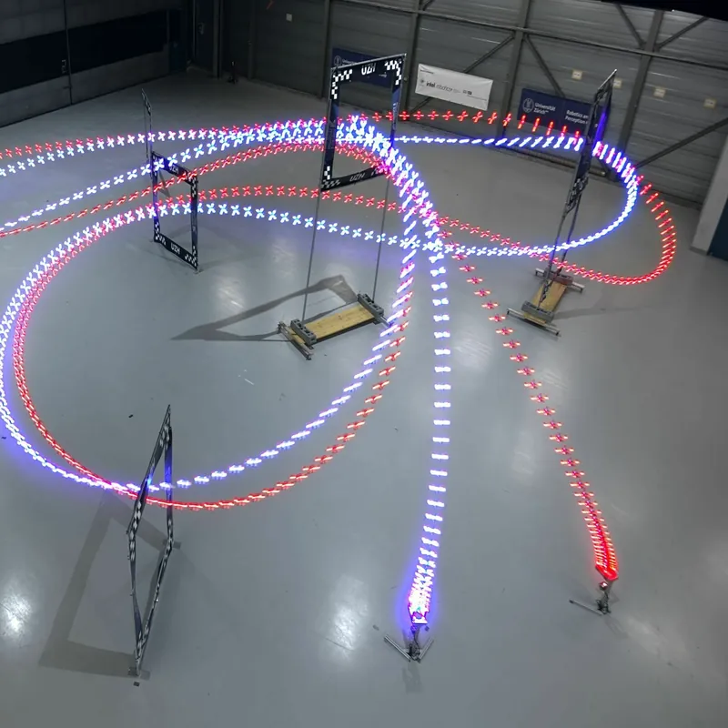
The first observer for INS with delayed GNSS to feature almost global asymptotic and local exponential stability.
Deep and traditional machine learning algorithms deployed to detect human emotions through audio signals.
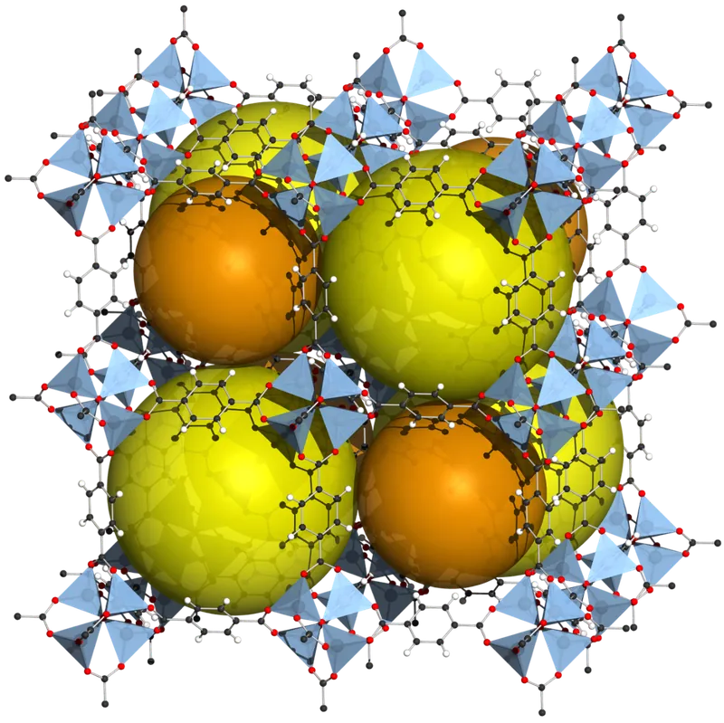
Use of MOFs as filtration membranes to improve acetone detection in breath for non-invasive diabetic monitoring.
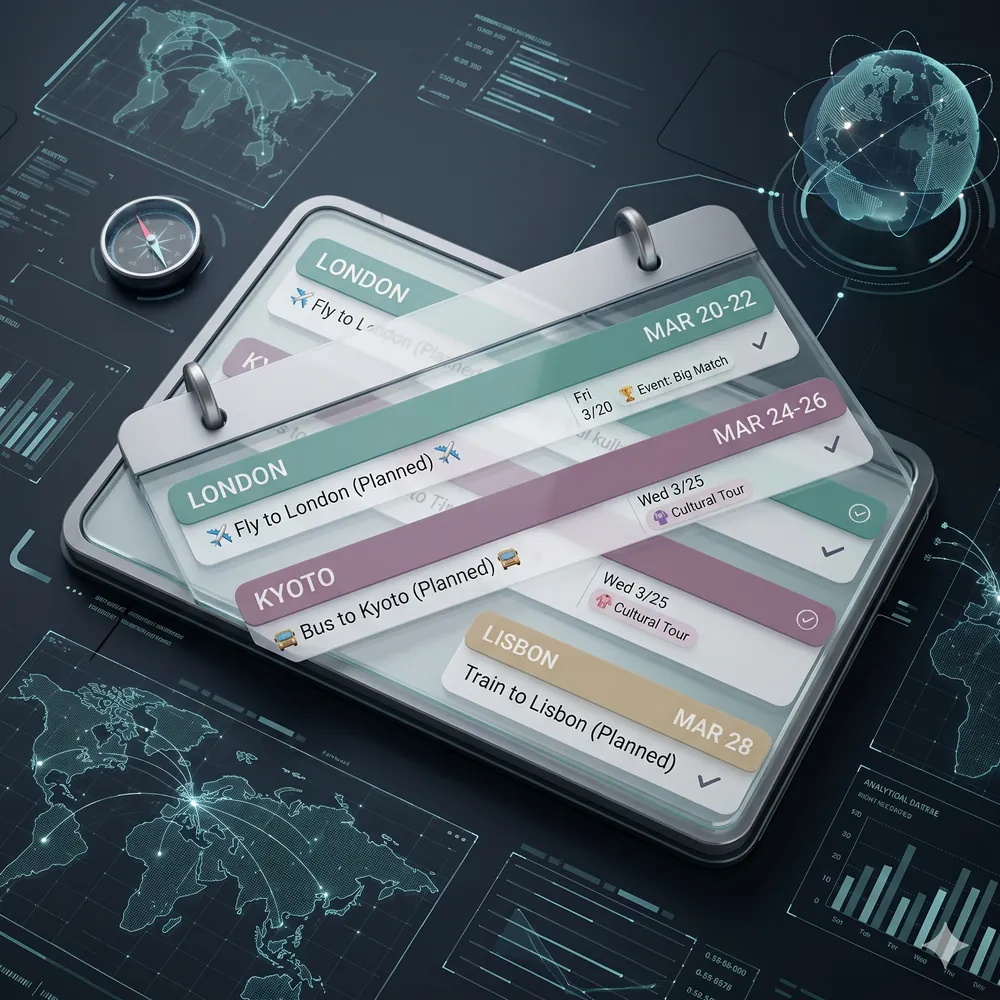
Trip planner optimised for a seamless visual experience. Allows users to visualise the physical route they have planned on a dynamic map, and receive insights on the distribution of their time.
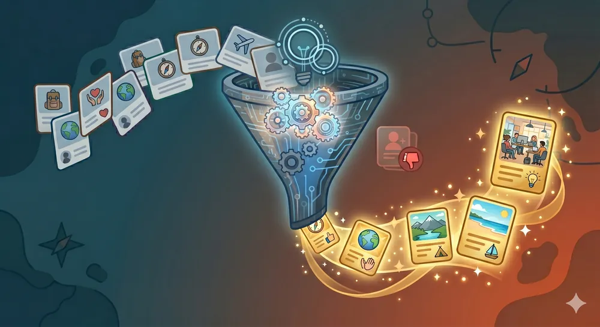
AI-based scraper for the Workaway website, designed to fast-track host selection by filtering opportunities that match specific travel preferences and criteria.
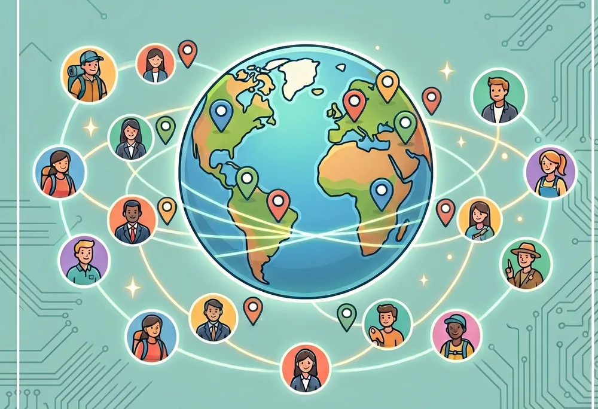
An application connected to Discord that parses notes on newly met contacts using an LLM, automatically populating a database to visualize and recall connections globally.
An educational checkers simulator developed to help users visualize and understand game engine decision-making algorithms, including Minimax search and alpha-beta pruning.
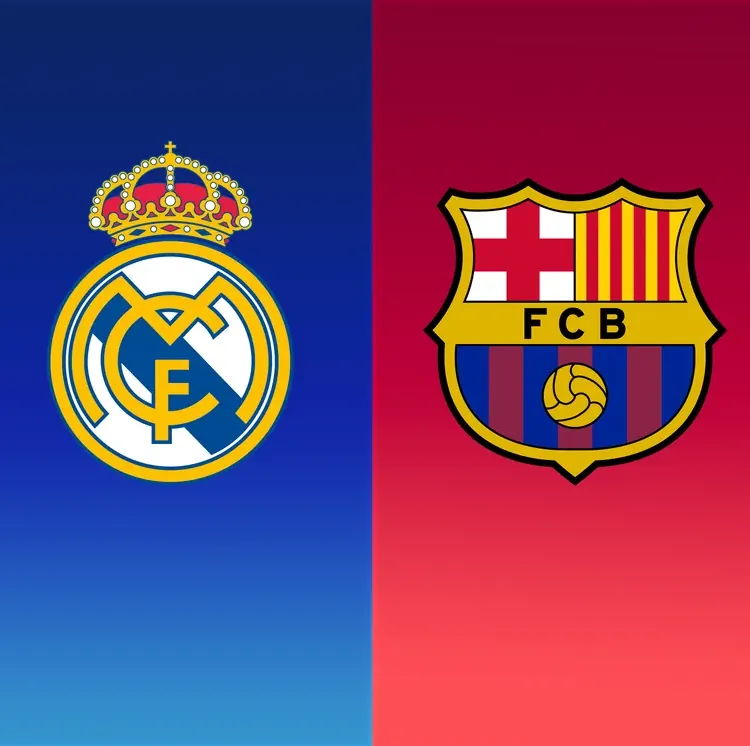
A fan-centric tool allowing users to generate combined XI starting lineups from two custom football teams.
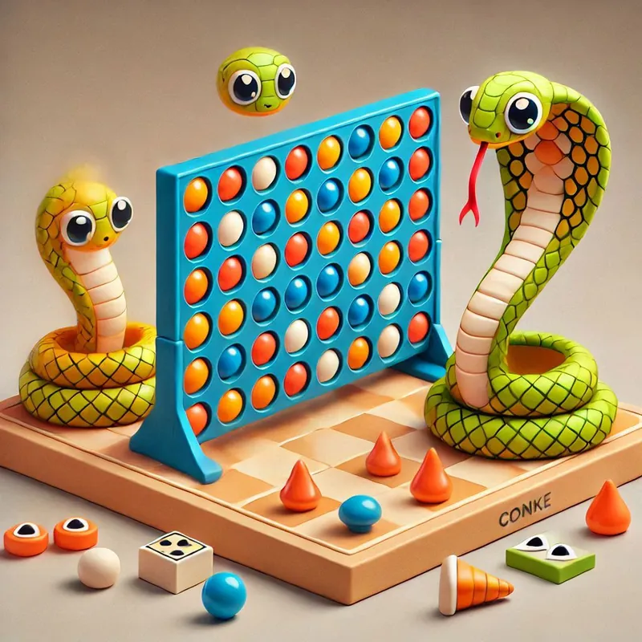
Classic games (Connect 4, Pong, and Snake) implemented in Python to demonstrate solid OOP fundamentals.
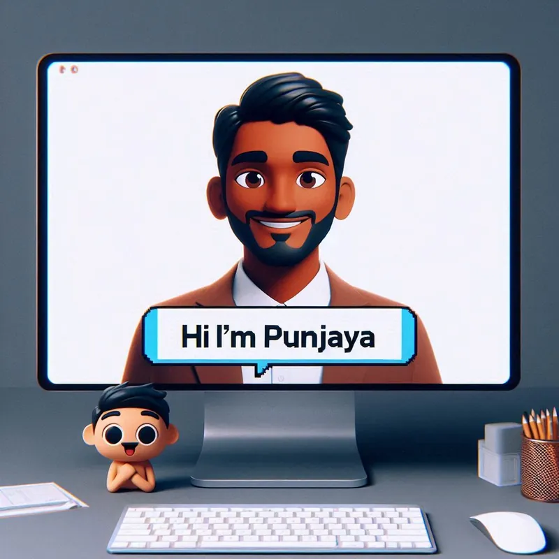
A premium portfolio website designed and developed using HTML, CSS, and modern interactive JavaScript.
Check Out My
Selected as a national finalist for AI Innovator in Defence and National Security.
Co-authored: "Constructive synchronous observer design for inertial navigation with delayed GNSS measurements".
Awarded to high-performing research-stream engineering students at the Australian National University (ANU).
Awarded to high-performing Engineering Honours students at the Australian National University (ANU).
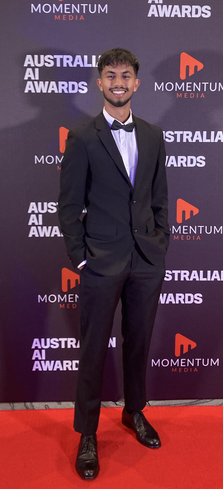
Explore My
Intermediate
Experienced
Experienced
Intermediate
Intermediate
Intermediate
Intermediate
Intermediate
Entry-Level
Entry-Level
Intermediate
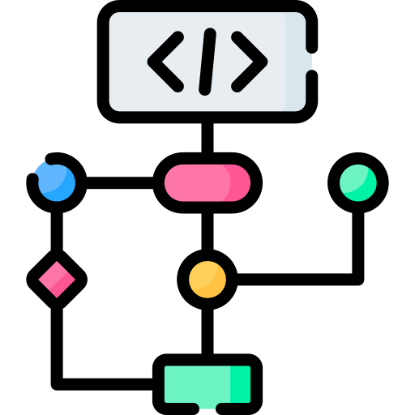
Intermediate
Intermediate
Intermediate
Intermediate
Experienced
Experienced
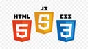
Intermediate
Intermediate
Experienced
Intermediate
Intermediate
Experienced
Experienced
Experienced
Get in Touch
I am open to discuss new opportunities in robotics, computer vision, embedded engineering, and AI systems. Feel free to reach out!